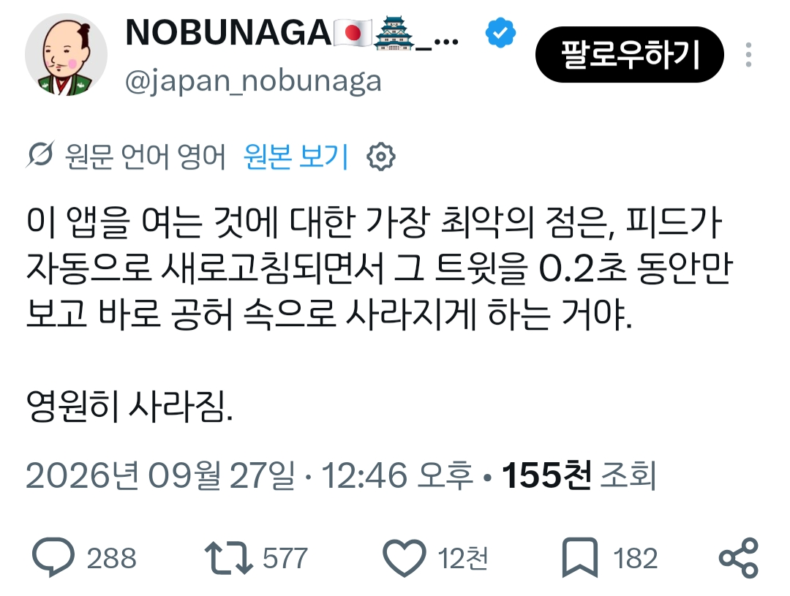
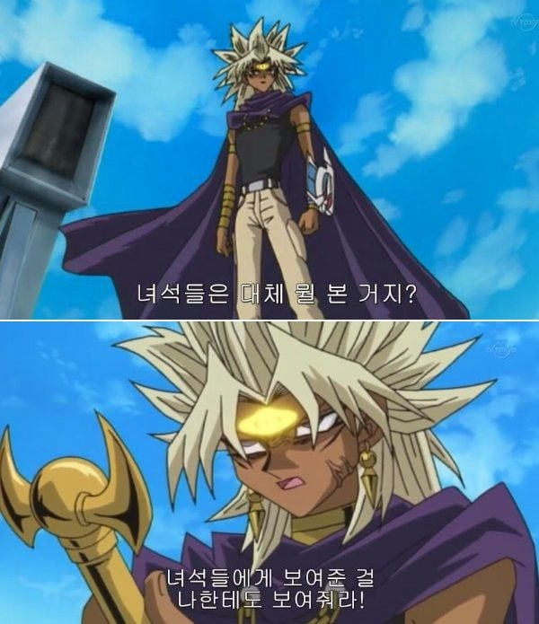

유튜브도 종종 그러는데 지좆대로 새로고침해서 0.5초정도 보인 존나 흥미로운 숏츠나 영상 영영 못보거나 한없이 그걸 찾아다니게 만드는거
ㄹㅇ....
개쩌는 야동 나왔는데 새로고침되면 허망함
난 항상 글카 설정에서 인스턴트 리플레이 20분 켜둠 바로 저장해서 영상 돌려보면서 찾으려고
랜덤 개드립....
꼭 보고싶은거 뒤로갔다가 다시 오면 바뀌어있음
ㄹㅇ ㄹㅇ
진짜 개쩌는 뿌빠 사진이 있었는데 사라짐
ㄹㅇ 분명 봤는데 안보임..
ㄹㅇ 켰는데 새로고침 되더니 다른거로 바뀜
야동 볼 때 빡친다고
개드립도 밑에 이미지 뜨는거 다시 보려고 뒤로가기 하면 다신 못봄ㅅㅂ
그게 오류일거 같음? ㅋㅋㅋㅋㅋㅋㅋㅋㅋㅋㅋㅋㅋ
그거 찾느라 핑계대면서 계속 트위터 하게 만드는거. 인스타도 똑같음
인스타는 활동 시청내역 들어가면 기록 뜨는데
새로고침 올리는거 계속 스크롤올리고 손 안떼면 계속 볼수잇는디
진지하게 말하자면 유저가 아이템이 추천 되었다는 노출 피드백이 클라를 통해 서버로 전송되고 서버는 해당 피드백을 MongoDB 같은 DB에 적재하기 때문임.
그리고 추천 API를 호출할때마다 그 유저 식별자를 기반으로 DB와 조인하여 본거빼기 혹은 랭크다운을 수행함. 그래서 의도적으로 노출이 안되고 있는걸꺼임.
물론 DB가 한없이 적재되면 안되니깐 인덱스 TTL이 걸려있거나 본거빼기를 수행할때 최근 본 유저 인터랙션으로 limit를 수행할거임.
즉, 본거를 다시 추천 받고 싶으면 TTL 시간이 지나서 유저 노출 인터랙션을 휘발시키거나 최대한 추천 노출을 많이 받아서 인터랙션을 갱신시키면 됨.
근데 그렇다고 해서 다시 노출되리란 보장이 없을 수 있음. 추천 로직이 비결정론적일 수 있거든.
개드립 댓글밑에도 잇자너.. ㅠㅠ
ㅋㅋㅋㅋㅋㅋㅋㅋㅋ